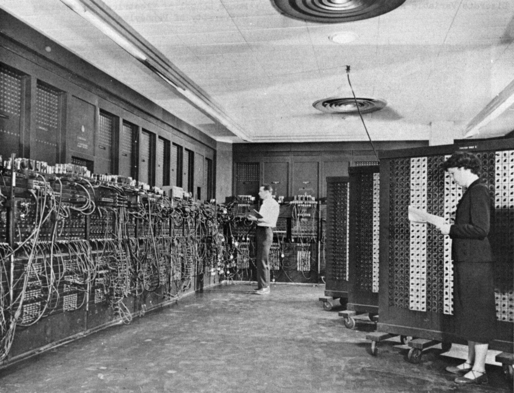
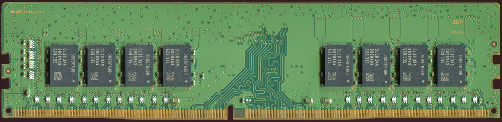
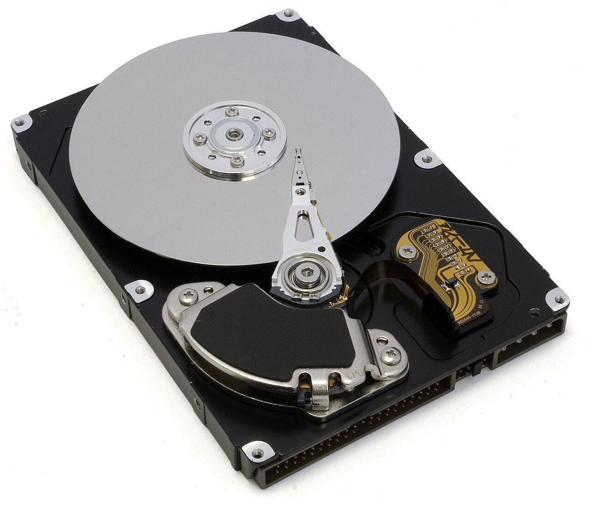
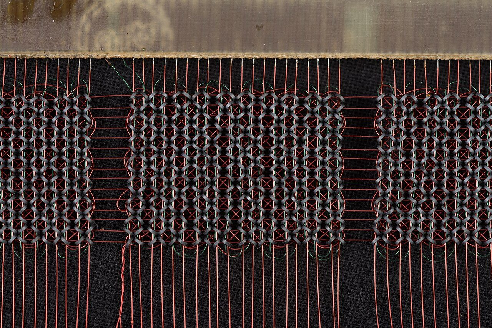
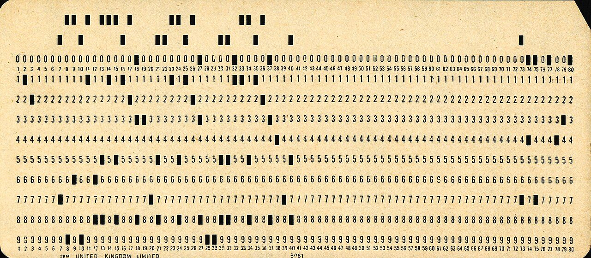
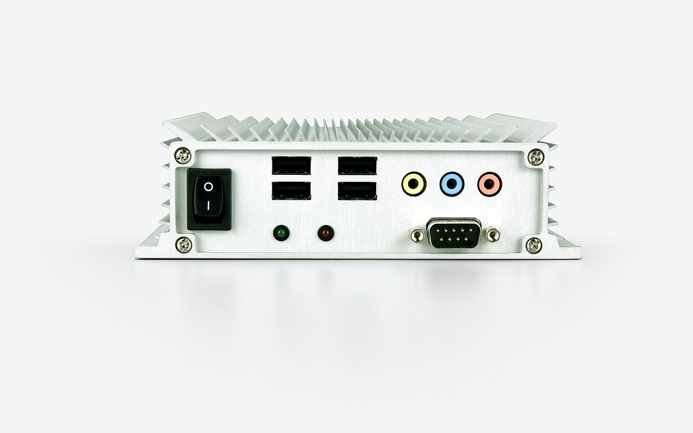
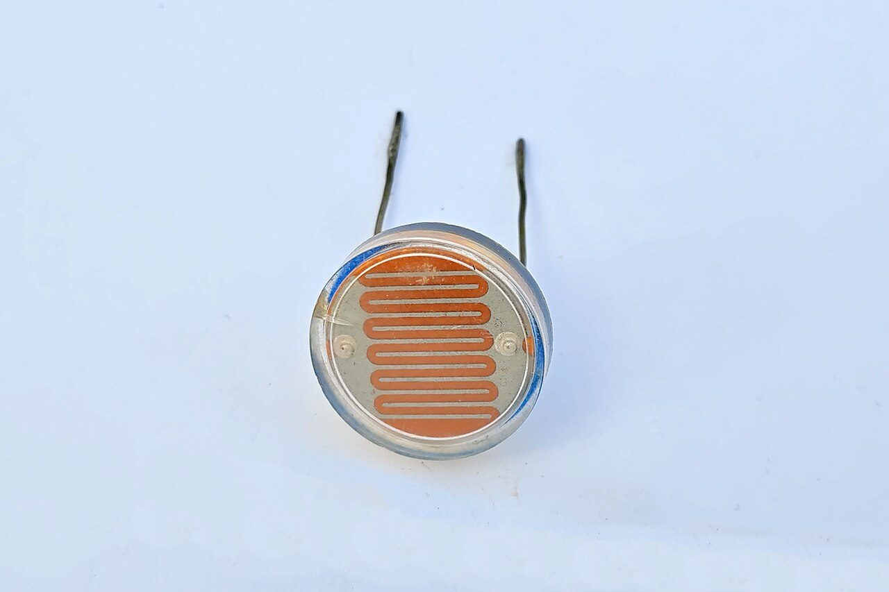
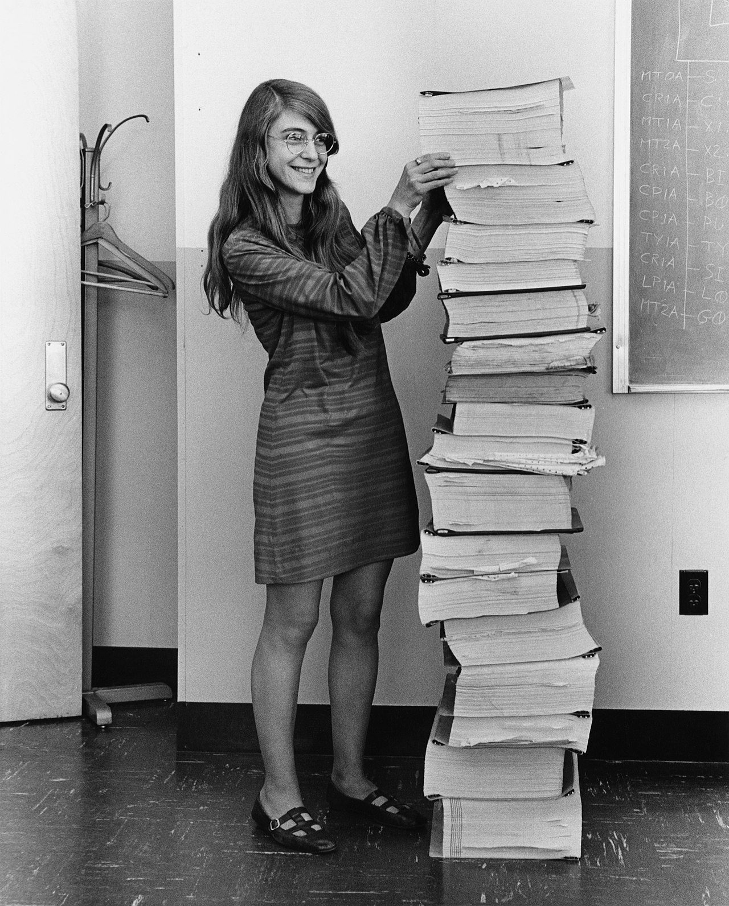
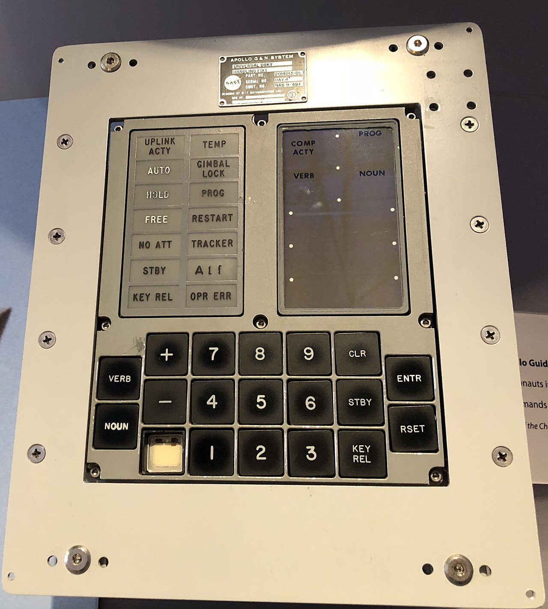
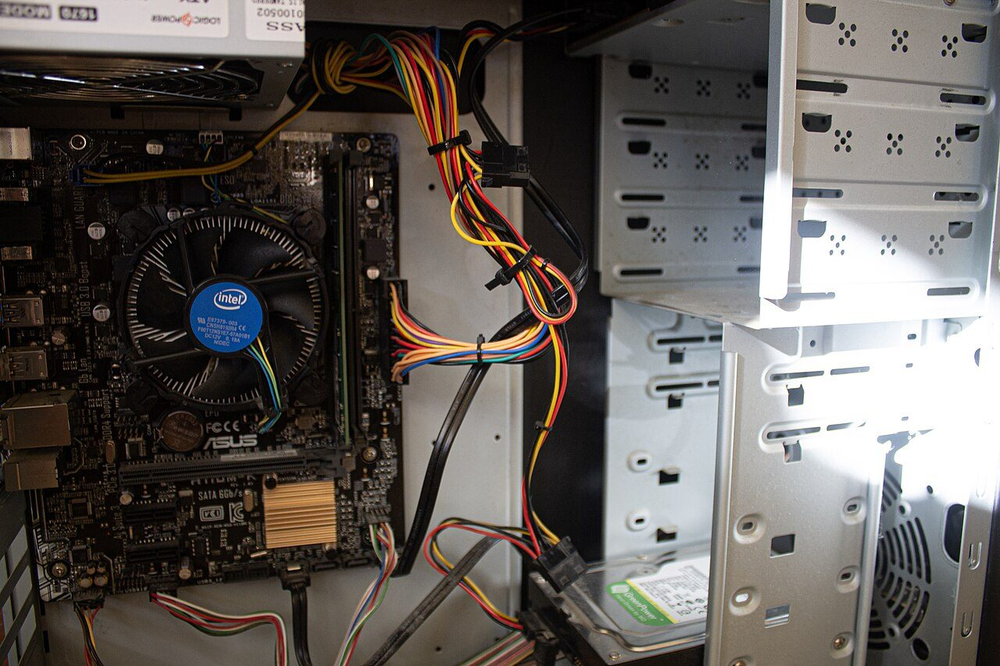

Una máquina que no sabe hacer nada
Con cables, cada comportamiento nuevo exige un circuito nuevo. La salida fue construir una sola máquina y escribirle aparte lo que tiene que hacer.
En la unidad de electricidad lo dejaste montado: una pila, un interruptor y una bombilla. Pulsas, se enciende. Sueltas, se apaga. Funciona, y funciona siempre igual.
De dónde sale esta unidad
Por qué un cable no basta y hubo que inventar la máquina que obedece listasVoz sintetizada sobre guión propio. La boca sigue el volumen real de la voz: se mueve cuando habla y se para en los silencios.
Inténtalo de verdad durante cinco minutos, con lo que sabes de electricidad. Vais a llegar todos al mismo sitio, y conviene llegar para verlo:
- Para el parpadeo hace falta otro montaje: algo que corte y devuelva la corriente solo.
- Para distinguir el toque del dedo mantenido, otro más.
- Para contar, otro.
- Y mañana, cuando te pida una cosa distinta, vuelta a empezar con el soldador.
Si cada comportamiento nuevo obliga a un circuito nuevo, ¿cuántos circuitos distintos habría que fabricar para que una sola máquina pudiera hacer todo lo que hace un móvil?
La respuesta es que no hay número: son infinitos, porque cada día se inventa un comportamiento nuevo. Por ese camino no se llega. Hacía falta otra idea, y costó siglo y medio encontrarla.
La idea: una máquina que no sepa hacer nada en concreto
Si el problema es que el comportamiento está en los cables, la salida es sacarlo de ahí. Se construye una sola máquina, siempre la misma, que por sí sola no hace nada interesante: solo sabe leer una lista de órdenes muy simples y obedecerlas una detrás de otra. El comportamiento ya no está soldado: está escrito, y lo escrito se cambia en un segundo.
Prueba la máquina de abajo. Tiene seis órdenes y nada más. Cambia de programa arriba y fíjate en qué cambia del dibujo: la respuesta es que nada del procesador, solo la lista.
Las dos mitades de un ordenador
Hardware: todo lo que se puede tocar. La placa, los chips, los cables, la pantalla. Si falla, se cambia la pieza.
Software: las instrucciones. No se toca, no pesa y no se gasta. Si falla, se corrige y se vuelve a cargar.
Un ordenador es una máquina de propósito general: no está hecha para una tarea, sino para ejecutar cualquier lista de instrucciones que le des.
Quién obedece la lista: la CPU
La pieza que lee la lista y la obedece es el procesador. No es un cerebro y no decide nada: hace tres cosas, en este orden, y vuelve a empezar. Sin parar, mientras tenga corriente.
La CPU y su ciclo
CPU (unidad central de proceso): el componente que ejecuta las instrucciones del programa.
Repite siempre el mismo ciclo de tres pasos:
- Busca en la memoria la instrucción que toca.
- La descodifica: averigua qué orden es y qué hay que hacer.
- La ejecuta, y anota cuál es la siguiente.
El reloj marca el ritmo de ese ciclo. Una CPU de 3 GHz recibe 3.000 millones de pulsos de reloj por segundo.

La idea de sacar las instrucciones fuera de la máquina no nació en la informática: nació tejiendo. Hacia 1805 Joseph Marie Jacquard montó un telar que leía tarjetas perforadas: el dibujo de la tela no estaba en el telar, estaba en las tarjetas. Cambiabas las tarjetas y el mismo telar tejía otra cosa.
En 1945 el ENIAC ya calculaba, pero se programaba recableando. La alternativa que ganó la escribió ese mismo año John von Neumann en un informe sobre la máquina siguiente, el EDVAC: guardar el programa en la misma memoria que los datos. Si el programa es un número más, se carga y se cambia igual de rápido que un número.
La primera máquina que lo hizo de verdad echó a andar en Manchester el 21 de junio de 1948. Casi todo lo que hoy llamamos ordenador sigue ese mismo esquema, ochenta años después.

Para ver qué hay debajo del ciclo de tres pasos: cómo un montón de interruptores microscópicos acaban siendo un procesador. El vídeo no se carga hasta que lo pulsas, y se reproduce sin cookies de seguimiento. Si no se ve aquí —porque la red del centro bloquee YouTube o porque ese vídeo no se deje empotrar—, ábrelo directamente aquí. El vídeo es de su autor y no forma parte del material publicado bajo la licencia de esta página.
Con qué cuentas
Solo con estas seis órdenes, las mismas de la escena de arriba. No hay más.
Juego de instrucciones
- ENCIENDE · pone la bombilla a 1
- APAGA · pone la bombilla a 0
- ESPERA · deja pasar un paso sin hacer nada
- SUMA 1 · suma 1 a la cuenta
- VUELVE A n · la siguiente instrucción será la número n (en la escena solo aparece VUELVE A 1, pero vosotros podéis saltar a cualquiera)
- PARA · la máquina se detiene
Qué hay que hacer
- Escribid, numerada, la lista de instrucciones que hace que la bombilla parpadee tres veces y luego se pare. Mirad antes el programa «Parpadeo» de la escena: hace casi eso, pero no para nunca.
- Escribid otra que parpadee sin parar y vaya contando los parpadeos.
- Haced la tabla del ciclo de la primera: una fila por paso, con tres columnas —PC, fase y qué pasa— hasta completar las cuatro primeras instrucciones (doce filas).
- Con estas seis órdenes hay cosas que no se pueden programar. Poned un ejemplo concreto, e inventad la instrucción que haría falta para resolverlo, explicando qué hace exactamente.
- Una frase final: en todo lo que habéis hecho, ¿qué era hardware y qué era software?
Cómo se evalúa
- El primer programa funciona y para donde debe (2 puntos).
- El segundo usa bien el salto y no se olvida de contar (2 puntos).
- La tabla del ciclo tiene las doce filas y las fases en orden (3 puntos).
- La instrucción inventada resuelve de verdad el ejemplo que habéis puesto (2 puntos).
- La frase final distingue bien las dos mitades (1 punto).
Vuelve al dibujo imposible del principio. Ya no hace falta: una sola máquina, y el comportamiento escrito aparte.
- ¿Por qué se dice que un ordenador es una máquina «de propósito general»?
Ver respuesta
Porque no está construido para una tarea concreta. La máquina es siempre la misma y lo que cambia es la lista de instrucciones, así que vale para cualquier cosa que se pueda escribir como lista.
- Los tres pasos del ciclo de la CPU, en orden.
Ver respuesta
Busca la instrucción en la memoria, la descodifica para saber qué pide y la ejecuta. Y vuelve a empezar.
- Se te estropea el altavoz del móvil. ¿Hardware o software? ¿Y si el móvil suena, pero una aplicación concreta no?
Ver respuesta
El altavoz roto es hardware: hay que cambiar la pieza. Si el resto suena y falla solo una aplicación, es software: se corrige la instrucción equivocada y se vuelve a cargar. Distinguirlo es lo primero que se hace al reparar algo.
Lectura del tema
Una sesión entera dedicada a leer y contestar. 30 párrafos numerados: cada uno lee el suyo en voz alta, en orden. Después, diez preguntas por escrito.
Dónde se guarda: la mesa y la estantería
Que el ordenador se arrastre con quince pestañas y que pierdas lo que no has guardado no son dos desgracias: son la misma pieza, la memoria RAM.
Dos cosas que ya te han pasado, y que todo el mundo cuenta como si fueran mala suerte:
- Abres muchas pestañas y el ordenador empieza a arrastrarse. No se apaga, no da error: va lento y punto.
- Se va la luz y pierdes el trabajo que no habías guardado. El fichero de ayer sigue ahí; lo de hace dos minutos, no.
Comparad las respuestas. Van a salir dos, y las dos son falsas:
- «Va lento porque el procesador es malo». Si fuera eso, iría igual de lento con una sola pestaña. Y no: con una va bien.
- «Va lento porque no tengo espacio». Ponle un disco de 4 TB: el fichero de ayer seguirá ahí, seguirás perdiendo lo de hace dos minutos y seguirá arrastrándose con quince pestañas. No has tocado el problema.
Si el disco grande no arregla ninguno de los dos, es que el sitio donde está lo que se pierde no es el disco. Entonces, ¿dónde está?
Por qué hacen falta dos memorias y no una
Lo ideal sería una sola memoria enorme, instantánea y que no se borre. No existe: lo rápido sale carísimo y lo barato sale lento. Así que se hacen dos, con papeles distintos.
La comparación que lo explica es tu propia mesa de estudio. En la mesa caben pocos libros, pero los tienes a mano. En la estantería cabe todo, pero hay que levantarse.
Las dos memorias
Memoria RAM: donde está lo que se está usando ahora mismo. Muy rápida, pequeña y volátil: al cortar la corriente se borra entera.
Almacenamiento (disco duro o SSD): donde se guarda lo que tiene que seguir ahí mañana. Enorme, mucho más lento y no volátil.
Un programa no se ejecuta desde el disco: primero se carga en la RAM, y la CPU trabaja siempre contra la RAM.
Cuánto es «más lento», en números
«Rápido» y «lento» no dicen nada hasta que se miden. Estos son los órdenes de magnitud típicos de hoy:
Tiempo en llegar a un dato
| Dónde está | Tarda | Veces más que la RAM |
|---|---|---|
| Memoria RAM | 80 ns | 1 |
| SSD | 0,1 ms | 1.250 |
| Disco duro con platos | 10 ms | 125.000 |
Un nanosegundo (ns) es la mil millonésima parte de un segundo; un milisegundo (ms), la milésima.
Esos números son tan pequeños que no significan nada. Así que se estiran: imagina que ir a buscar un dato a la RAM te costara un segundo. Multiplicando los tres por el mismo factor, que es 12,5 millones:
Lo mismo, a escala humana
- Buscar en la RAM: 1 segundo. Alargas el brazo.
- Buscar en el SSD: 21 minutos. Bajas a la biblioteca.
- Buscar en el disco duro: 35 horas. Vas a otra ciudad y vuelves.
Con eso las dos molestias del principio dejan de ser mala suerte y pasan a ser consecuencias. Se te llena la mesa: el sistema empieza a bajar cosas a la estantería y a subirlas, y cada viaje cuesta mil veces más. Se va la luz: la mesa se vacía, porque la RAM necesita corriente para acordarse.


Antes de los chips, la memoria de trabajo de los ordenadores fue esto: una rejilla de anillos de ferrita ensartados en hilos de cobre. Cada anillo se imanta en un sentido o en el otro, y eso guarda un bit. Uno. Y a diferencia de la RAM de hoy, no se borraba al apagar.
Lo impresionante es cómo se fabricaba: ensartando los anillos a mano, uno a uno, con aguja. Haz la cuenta con el módulo de la foto de arriba. Tiene 16 GB, o sea 137.438.953.472 bits. A un anillo por segundo, sin dormir ni parar, serían más de 4.300 años.

Repasa los tres componentes con piezas reales en la mano. El vídeo no se carga hasta que lo pulsas, y se reproduce sin cookies de seguimiento. Si no se ve aquí —porque la red del centro bloquee YouTube o porque ese vídeo no se deje empotrar—, ábrelo directamente aquí. El vídeo es de su autor y no forma parte del material publicado bajo la licencia de esta página.
El caso
Un ordenador del aula tiene 8 GB de RAM y un disco duro de platos de 500 GB, del que están usados 180 GB. Un alumno lo tiene así ahora mismo:
Lo que ocupa cada cosa en la RAM
| Programa | RAM |
|---|---|
| Sistema operativo | 2,5 GB |
| Navegador con 12 pestañas, a 0,35 GB cada una | ? |
| Editor de textos | 0,8 GB |
| Reproductor de música | 0,4 GB |
| Antivirus | 0,6 GB |
Qué hay que hacer
- Calculad cuánta RAM pide en total, y decid si cabe en los 8 GB. Si no cabe, cuánto falta.
- Con lo que no cabe el sistema tiene que ir al disco. Con los datos de la tabla de tiempos, decid cuántas veces más tarda en llegar a un dato que esté en ese disco duro que a uno que esté en la RAM.
- El alumno cierra dos pestañas. Rehaced la cuenta. ¿Cabe ya? Escribid en una frase qué acaba de demostrar eso.
- Hay 60 euros y dos opciones, que cuestan lo mismo: (A) añadir 8 GB de RAM, o (B) cambiar el disco duro por un SSD de 500 GB. Elegid una y justificadla con números, no con opiniones. Decid también qué problema no arregla la que habéis elegido.
- Al alumno se le apaga el ordenador de golpe. Decid exactamente qué pierde y qué no, y por qué.
Cómo se evalúa
- La suma está bien y se dice cuánto falta (2 puntos).
- El factor de lentitud está bien sacado de la tabla (2 puntos).
- La conclusión del paso 3 no se queda en «cabe»: explica por qué importa (2 puntos).
- La elección de compra va con números y admite qué deja sin resolver (3 puntos).
- La respuesta sobre el apagón distingue volátil de no volátil (1 punto).
- ¿Por qué se pierde lo que no has guardado, pero no lo de ayer?
Ver respuesta
Porque lo que estás escribiendo está en la RAM, que es volátil: necesita corriente para acordarse. Lo de ayer está en el almacenamiento, que no la necesita. Guardar es precisamente copiar de una a otro.
- Tienes 8 GB de RAM y un disco de 1 TB. ¿Por qué el ordenador va lento con muchas pestañas si te sobra tanto disco?
Ver respuesta
Porque lo que se llena es la RAM, no el disco. Cuando no cabe, el sistema empieza a mover datos al disco y a traerlos de vuelta, y el disco es miles de veces más lento. Sobrar disco no ayuda: el problema es el tamaño de la mesa, no el de la estantería.
- ¿Por qué un SSD arranca el sistema mucho antes que un disco duro de platos?
Ver respuesta
Porque en el disco duro hay que mover piezas: el plato gira y el brazo se coloca. Eso tarda milisegundos. En un SSD no se mueve nada, todo es electrónico, y cada acceso cuesta unas cien veces menos.
Ceros y unos: cómo se escribe algo con solo dos símbolos
Un cable solo sabe decir dos cosas. Con eso hay que guardar textos, fotos y canciones —y se puede, porque las combinaciones se multiplican.
De la unidad de electricidad te llevaste un hecho que ahora vale oro: por un cable pasa corriente o no pasa. Eso es todo lo que un cable sabe distinguir con seguridad.
La idea que se le ocurre a casi todo el mundo es una tensión para cada letra: 0,2 V para la A, 0,4 V para la B, y así hasta la Z. Es ingeniosa, y no funciona. Hagamos la cuenta que lo demuestra.
El circuito trabaja a 5 V y hacen falta 27 letras. Reparte los 5 V entre las 27: quedan 26 escalones, uno cada 0,19 V. Ahora piensa en un cable de verdad, que se calienta, que tiene un motor al lado y al que le llega ruido eléctrico. Con un ruido de 0,3 V, ¿qué letra ha llegado?
No hay manera de saberlo: 0,3 V es más de un escalón y medio, así que la letra que llega no tiene por qué ser la que salió. Y no se arregla midiendo mejor, porque el problema no es el aparato, es la distancia entre escalones. Cuantos más símbolos metes, más juntos quedan y más fácil es confundirlos.
La salida es rendirse en lo que parecía una ventaja: usar solo dos símbolos. Con 0 V y 5 V los escalones quedan a 5 V de distancia. Ese mismo ruido de 0,3 V ya no confunde absolutamente nada. Renuncias a meter mucho por un cable, y a cambio ganas no equivocarte nunca.
Con dos símbolos, ¿hasta dónde se llega?
La objeción evidente es que con dos símbolos no cabe nada. Y es falsa, por una razón de aritmética: no se usa un cable, se usan varios a la vez, y las combinaciones se multiplican.
Pulsa los ocho interruptores de abajo. Y fíjate en las tres cajas del final: es el mismo byte leído de tres maneras distintas.
Bit y byte
Bit: la unidad mínima de información. Dos estados posibles: 0 o 1. Es un interruptor.
Byte: un grupo de 8 bits. Es la unidad con la que se mide todo lo demás.
Con n bits salen 2n combinaciones distintas. Con 8 bits, 28 = 256.
| Bits | Combinaciones | Para qué da |
|---|---|---|
| 1 | 2 | sí o no |
| 4 | 16 | las cifras del 0 al 15 |
| 8 | 256 | una letra, o un nivel de gris |
| 16 | 65.536 | casi cualquier idioma escrito |
| 24 | 16.777.216 | un color de pantalla |
Cómo se lee un byte: el acuerdo
Un byte por sí solo no significa nada. El mismo 0100 0001 es el número 65, es la letra A y es un gris oscuro. Lo que decide cuál de las tres cosas es un acuerdo previo sobre cómo hay que interpretarlo.
Cómo se guarda cada cosa
- Números: en binario. Cada posición vale el doble que la de su derecha: 128, 64, 32, 16, 8, 4, 2, 1. Se suman las que valen 1.
- Texto: con una tabla acordada que asigna un número a cada carácter. La clásica es ASCII: la A es el 65, la a es el 97, el espacio es el 32.
- Imágenes: la foto se parte en píxeles y de cada uno se guarda su color con 3 bytes (rojo, verde y azul, de 0 a 255 cada uno).
- Sonido: se mide la onda miles de veces por segundo y cada medida se guarda como un número.
Y las unidades: 1 kB son mil bytes, 1 MB un millón, 1 GB mil millones.

Que ganara el binario no era obvio, y hubo quien lo intentó de otra forma. El ENIAC era decimal: gastaba diez tubos por cada cifra. Y en 1958, en la Universidad de Moscú, Nikolái Bruséntsov construyó el Setun, un ordenador ternario, de tres estados. Sobre el papel era más eficiente, se fabricaron unas cincuenta máquinas y funcionaban.
Perdió igual, y no por ser peor idea: porque construir un componente que distinga dos estados es muchísimo más barato y más fiable que uno que distinga tres, y esa ventaja se multiplica por los miles de millones de componentes que lleva un chip. Ganó lo tonto y seguro sobre lo elegante, que en tecnología pasa a menudo.
Cuenta la misma historia del reto de hoy: por qué dos estados y no diez. El vídeo no se carga hasta que lo pulsas, y se reproduce sin cookies de seguimiento. Si no se ve aquí —porque la red del centro bloquee YouTube o porque ese vídeo no se deje empotrar—, ábrelo directamente aquí. El vídeo es de su autor y no forma parte del material publicado bajo la licencia de esta página.
Qué hay que hacer
Para la parte de letras podéis usar la escena de los ocho interruptores: poned el número y leed la letra, o al revés.
- Escribid vuestro nombre de pila en ASCII, dos veces: primero en números y después en binario de 8 bits. Sin acentos y sin eñe, que esos no están en la tabla básica —y esa ya es una conclusión: escribid una frase diciendo qué problema revela eso.
- Calculad cuántos bytes ocupa vuestro nombre.
- Una foto de móvil tiene 4.000 × 3.000 píxeles. Calculad cuántos píxeles son, y cuántos bytes ocuparía sin comprimir en color (3 bytes por píxel). Pasadlo a MB.
- Rehaced la cuenta en blanco y negro (1 byte por píxel). ¿Cuántas veces menos ocupa? Decid por qué sale ese factor exacto.
- En una tarjeta de 64 GB, ¿cuántas de esas fotos en color caben? (Usad 1 GB = mil millones de bytes.)
- Abrid la galería de un móvil y mirad lo que ocupa una foto de verdad: unos 4 MB, no los que os han salido. ¿Dónde ha ido el resto? No hace falta que sepáis la respuesta técnica; escribid vuestra hipótesis.
Cómo se evalúa
- El nombre está bien codificado en las dos formas (2 puntos).
- La frase sobre los acentos entiende el problema y no lo despacha (1 punto).
- La cuenta de la foto en color está bien, con las unidades puestas (3 puntos).
- El factor entre color y blanco y negro está bien explicado, no solo calculado (2 puntos).
- El número de fotos en la tarjeta está bien (1 punto).
- La hipótesis final es razonable (1 punto).
- ¿Por qué los ordenadores usan dos símbolos y no diez, si con diez cabría más?
Ver respuesta
Porque con dos los estados quedan lo más separados posible y el ruido eléctrico no los confunde. Con diez, los escalones quedan tan juntos que cualquier interferencia cambia el dato. Se renuncia a capacidad por cable a cambio de fiabilidad, y se compensa poniendo muchos cables.
- ¿Cuántas combinaciones distintas dan 8 bits, y por qué sale ese número?
Ver respuesta
256, porque cada bit duplica las posibilidades del anterior: 28 = 256. Van del 0 al 255, que son 256 valores contando el cero.
- El byte 0100 0001 ¿es el número 65, la letra A o un gris oscuro?
Ver respuesta
Las tres cosas, y ninguna por sí sola. Un byte no significa nada hasta que hay un acuerdo sobre cómo leerlo. El programa que lo abre es quien sabe qué acuerdo toca: por eso una foto abierta con un editor de texto sale como basura.
Entrada y salida: traducir el mundo a números
La temperatura, el sonido y la luz no vienen en escalones, y dentro de la máquina todo son escalones. Lo que entra no es el mundo: es una copia, y se puede medir cuánto se pierde.
La sesión pasada acabó en un sitio incómodo: dentro de la máquina no hay palabras ni imágenes, solo ceros y unos. Y tú no eres ceros y unos. La clase tampoco.
Van a salir estas tres, y las tres se caen solas:
- «Le pongo un termómetro dentro». Un termómetro de los de mercurio no le dice nada a un cable. La columna sube, y ahí se queda.
- «Un cable para cada temperatura». Uno para 20 °C, otro para 21, otro para 22… Ya viste adónde lleva eso en la sesión 3: a un cable por símbolo, que es justo lo que no se puede hacer.
- «Que mida y me lo diga». Vale, ¿y qué pasa con 20,5? ¿Y con 20,53? ¿Y con 20,531?
La temperatura no va a saltos. Entre 20 y 21 grados hay infinitos valores, y lo mismo pasa con la luz que entra por la ventana y con el sonido de tu voz. La máquina, en cambio, solo tiene escalones. ¿Cómo se mete algo que no tiene escalones en una caja que solo sabe contar escalones?
La respuesta honrada es que no se mete. Lo que entra en la máquina no es el mundo: es una copia con escalones, hecha a propósito, y el oficio consiste en que los escalones sean tan pequeños que ya no se noten. Hoy vas a ver exactamente cuánto se pierde por el camino, porque se puede medir.
Primero: algo que traduzca el mundo a voltios
Antes de haber números tiene que haber electricidad, porque es el único idioma que entiende la máquina. De eso se encargan unos componentes cuya propiedad eléctrica cambia cuando cambia el mundo:
- Una LDR: cuanta más luz le da, menos resistencia tiene.
- Un termistor: su resistencia cambia con la temperatura.
- Un micrófono: el aire empuja una lámina y eso genera una tensión que sube y baja igual que el sonido.
Todavía no hay ni un número. Lo que hay es una tensión que sube y baja igual que sube y baja el mundo, sin escalones. A eso se le llama señal analógica, y es lo que hay que convertir.
Las dos clases de señal
Señal analógica: varía de forma continua y puede tomar infinitos valores. La temperatura, el sonido, la luz.
Señal digital: solo puede tomar unos valores concretos, contados. Los ceros y unos de la sesión 3.
Sensor: componente que convierte una magnitud física en una magnitud eléctrica. Es la puerta de entrada del mundo a la máquina.
Segundo: alguien que le ponga números a esa tensión
El conversor analógico-digital hace dos cosas, y las dos son decisiones que alguien tomó. Cambia los dos controles de la escena y mira los números de abajo: no son adornos, están medidos sobre lo que acabas de dibujar.
Cómo se convierte el mundo en números
Muestreo: cada cuánto se mira. Se mide un número de veces por segundo y entre medida y medida no se sabe nada de lo que hizo la señal.
Cuantificación: con cuánta finura se anota cada medida. Con n bits hay 2n valores posibles, que se reparten toda la escala en 2n − 1 escalones.
La copia nunca es exacta: a la diferencia entre lo que había y lo que se anota se le llama error de cuantificación, y como mucho es medio escalón.
Más bits y más medidas dan una copia más fiel, y siempre cuestan más bytes. No hay forma de escapar de ese trato.
Tercero: el camino de vuelta
Para sacar algo fuera se hace lo mismo al revés. La máquina suelta números y un conversor digital-analógico los convierte en una tensión que mueve algo: el cono de un altavoz, un motor, la luz de un píxel.
Sensores y actuadores
Sensor · el mundo → electricidad → números. Es entrada: LDR, termistor, micrófono, sensor de distancia por ultrasonidos, botón.
Actuador · números → electricidad → el mundo. Es salida: motor, servo, altavoz, LED, electroválvula, resistencia calefactora.
Un robot no es más que esto: sensores que le cuentan qué pasa, un programa que decide y actuadores que hacen algo al respecto.
Y por dónde entra y sale todo eso: periféricos y puertos
Periféricos
Periférico es todo aparato que se conecta al ordenador y no es el ordenador.
- De entrada: teclado, ratón, micrófono, cámara, escáner, lector de códigos.
- De salida: pantalla, altavoces, impresora, proyector.
- Mixtos, que hacen las dos cosas: pantalla táctil, tarjeta de red, memoria USB, disco externo, impresora multifunción.
El puerto es la conexión por la que se enchufan: USB, HDMI, jack de 3,5 mm, RJ45 de red, ranura de tarjeta SD.
Y aquí vuelve una palabra de la sesión 3. Un puerto no es solo un agujero con una forma: es un acuerdo sobre cuántos voltios significan 1, en qué orden van los bits, a qué velocidad y quién habla primero. Que cada uno tenga una forma distinta es a propósito: así no puedes enchufar algo donde su acuerdo no vale.


¿Por qué al teléfono hay que deletrear «ese, de Soria»? Porque la voz por teléfono se mide 8.000 veces por segundo y eso obliga a cortar todo lo que suene por encima de unos 3.400 Hz. El problema es que la s y la f tienen casi toda su energía por encima de esa frecuencia: al cortarlas, las dos se quedan en el mismo soplido y dejan de distinguirse.
No es que el teléfono suene mal: es que alguien decidió cuánto se iba a tirar a la basura, a cambio de que la llamada ocupara poco. Esa decisión es exactamente la de la escena de arriba, y se tomó en 1962, en Chicago, con el primer sistema telefónico digital del mundo. Sesenta años después sigues deletreando por su culpa.
Los mismos tres pasos de hoy, contados con la señal delante. Es de un canal universitario y el nivel está por encima del de clase: míralo para fijar el vocabulario, no para aprender de cero. El vídeo no se carga hasta que lo pulsas, y se reproduce sin cookies de seguimiento. Si no se ve aquí —porque la red del centro bloquee YouTube o porque ese vídeo no se deje empotrar—, ábrelo directamente aquí. El vídeo es de su autor y no forma parte del material publicado bajo la licencia de esta página.
El encargo
El instituto quiere que un ordenador vigile el invernadero y avise si la temperatura se sale de lo normal. Hay que elegir con qué finura se mide, y se elige calculando, no opinando.
El sensor que os han dado
| Dato | Valor |
|---|---|
| Tensión que da a 0 °C | 0 V |
| Tensión que da a 50 °C | 5 V |
| Entre esos dos puntos | proporcional |
Qué hay que hacer
- ¿Cuántos grados por voltio da este sensor?
- Lo conectáis a un conversor de 8 bits. Calculad cuántos valores distintos puede dar, cuántos voltios mide cada escalón y, sobre todo, a cuántos grados equivale ese escalón. Comprobadlo con la escena de arriba antes de seguir.
- Os piden distinguir décimas de grado. ¿Cuántos escalones hacen falta en los 50 °C? ¿Y cuántos bits? Probad con 8 y con 9 y decid cuál es el primero que vale.
- Ahora el muestreo. Decid cuántas veces por segundo hay que medir la temperatura de un invernadero, y cuántas habría que medir el sonido de un micrófono. Justificadlo con una sola idea: ¿cuánto puede cambiar eso mientras no miras?
- Con 16 bits (2 bytes por medida) calculad lo que ocupa un día entero midiendo una vez por minuto, y lo que ocuparía midiendo mil veces por segundo. Pasad el segundo a MB. Escribid una frase: medir de más no es «por si acaso», ¿qué es?
- Haced una tabla con ocho aparatos del aula. Para cada uno: si es de entrada, de salida o mixto, y por qué puerto se conecta. Al menos uno tiene que ser mixto, y hay que explicar por qué lo es.
Cómo se evalúa
- Los grados por voltio están bien (1 punto).
- La cuenta de los 8 bits llega hasta los grados, no se queda en los voltios (2 puntos).
- El número de bits para la décima de grado está justificado con la cuenta de escalones (2 puntos).
- Las dos frecuencias de muestreo se razonan por lo que puede cambiar la magnitud, no «porque el sonido es más rápido» (2 puntos).
- Las dos cuentas de tamaño están bien y con unidades (2 puntos).
- La tabla de los ocho aparatos distingue bien el mixto (1 punto).
- ¿Por qué una foto o una canción guardadas en un ordenador no son exactamente lo que había fuera?
Ver respuesta
Porque el mundo cambia de forma continua y la máquina solo sabe anotar valores contados. Se mira cada cierto tiempo (muestreo) y cada medida se redondea al escalón más cercano (cuantificación). Lo que se pierde entre medida y medida, y al redondear, ya no vuelve.
- Un conversor de 8 bits y otro de 16 miden el mismo sensor. ¿Qué cambia?
Ver respuesta
El de 8 bits reparte la escala en 255 escalones y el de 16, en 65.535: los escalones del segundo son unas 257 veces más finos, así que se equivoca mucho menos. A cambio, cada medida ocupa 2 bytes en vez de 1. Fidelidad y tamaño van siempre juntos.
- Una pantalla táctil, ¿es periférico de entrada o de salida?
Ver respuesta
Las dos cosas: es mixto. Como pantalla saca información (salida) y como superficie táctil mete dónde has puesto el dedo (entrada). Lo mismo pasa con una memoria USB, de la que se lee y en la que se escribe.
El sistema operativo: quién reparte la máquina
Doscientos programas, cuatro núcleos y ninguna pelea. Detrás hay un programa que no pide las cosas por favor: las quita, las separa y las reparte.
Empieza mirando, no leyendo. En el equipo del aula abre el administrador de tareas o el monitor del sistema y cuenta los procesos. Van a salir decenas, y en Windows más de cien —marca la casilla de ver los de todos los usuarios y crecen otra vez—. Ahora mira cuántos núcleos tiene el procesador: cuatro, con suerte ocho.
Las reglas que escribe todo el mundo la primera vez son estas tres. Y las tres se rompen por el mismo sitio:
- «Que cada uno avise cuando termine». Basta con que uno no avise —porque se ha colgado, o porque está mal escrito— para que la máquina entera se quede muerta. Y no es un cuento: los ordenadores personales funcionaron así hasta los años noventa, y por eso se colgaban enteros y había que apagarlos a lo bruto.
- «Que cada uno coja la memoria que necesite». Dos programas eligen el mismo hueco y se machacan los datos el uno al otro. Nadie ha hecho nada mal y los dos fallan.
- «Que cada uno escriba en el disco donde quiera». Uno escribe encima de los ficheros de otro. O de los tuyos.
En las tres estás pidiendo que se porten bien. ¿Y si uno no quiere? ¿Y si uno simplemente está roto? Un reparto que solo funciona cuando todos colaboran no es un reparto: es un deseo.
Así que hace falta alguien que no pida por favor: que pueda quitar la CPU a un programa aunque no quiera soltarla, que impida tocar la memoria del vecino y que sea el único que toca el disco. Ese alguien es también un programa —no hay magia—, pero manda sobre los demás: es el sistema operativo.
Repartir la CPU: el turno
La escena de abajo reparte una sola CPU entre cinco programas. Los tiempos que salen no están escritos: se calculan simulando el reparto, turno a turno. Mira las dos cifras a la vez, la de tu tecla y la del porcentaje, y busca el turno que las deje bien a las dos. Spoiler: no existe.
El planificador
Proceso: un programa que se está ejecutando, con su trozo de memoria y una anotación de por dónde iba.
El planificador del sistema operativo le da a cada proceso un turno de unos pocos milisegundos y, cuando se acaba, se lo quita aunque no haya terminado. Eso se llama multitarea con desalojo.
Como los turnos son cortísimos, parece que todos los programas van a la vez. No van a la vez: van por turnos, muy deprisa.
Cambiar de programa cuesta tiempo: hay que guardar por dónde iba uno y recuperar por dónde iba el otro. Turnos más cortos responden antes y gastan más máquina en cambiar.
20 de julio de 1969, módulo lunar del Apolo 11, a unos minutos de posarse. El ordenador de a bordo empieza a dar una alarma: 1202. Luego otra, 1201. Significan que se ha quedado sin sitio para tanto trabajo: un radar que no hacía falta en ese momento le estaba robando alrededor del 13 % del tiempo de cálculo.
Un ordenador normal de la época se habría colgado, y con él el alunizaje. Este no, porque su reparto estaba hecho por prioridades: al ver que no llegaba, tiró por la borda las tareas menos importantes, se reinició y siguió calculando lo único que no podía fallar, que era guiar la nave. Desde tierra dieron el «go» y aterrizaron.
El programa lo había escrito el equipo de Margaret Hamilton en el MIT. Lo que salvó el alunizaje no fue un ordenador más potente: fue haber decidido antes qué se tira cuando no se llega. Eso es exactamente lo que hace el planificador de la escena de arriba, solo que en tu mesa nadie se estrella.


Repartir la memoria: cada uno en su sitio
Memoria separada
El sistema operativo le da a cada proceso su propio trozo de RAM y, con ayuda del hardware, impide que toque el de los demás. Un programa que se sale de lo suyo no rompe nada ajeno: el sistema lo cierra a él y los demás siguen.
Por eso hoy se cierra una aplicación y el resto sigue. Antes de que esto existiera, un fallo en cualquier programa se llevaba por delante el ordenador entero.
Repartir el disco: ficheros, carpetas y permisos
Cómo se organiza lo guardado
Fichero: una tira de bytes con un nombre. Nada más.
Carpeta: un fichero especial que contiene una lista de nombres. Por eso se pueden meter unas dentro de otras.
Ruta: el camino completo hasta un fichero, carpeta a carpeta (Documentos / tema7 / pruebas / notas.txt).
Permisos: para cada fichero, quién puede leerlo, quién puede escribirlo y quién puede ejecutarlo. Es lo que evita que un alumno borre el sistema o lea el trabajo de otro.
Y esconderlo todo
Falta el trabajo más invisible. Tu programa de dibujo no sabe nada de tu impresora, ni falta que le haga: le pide al sistema operativo «imprime esto» y el sistema, a través del controlador (el driver) de ese modelo concreto, se entiende con ella. Ahí está enganchada la sesión anterior: el sistema operativo es quien habla con los periféricos, y por eso puedes cambiar de impresora sin cambiar de programas.
Qué hace un sistema operativo
- Arrancar la máquina y dejarla lista.
- Repartir la CPU entre los procesos, por turnos.
- Repartir la memoria y que nadie toque la del vecino.
- Gestionar ficheros, carpetas y permisos.
- Hablar con los periféricos a través de los controladores.
- Dar una interfaz para que tú solo tengas que pulsar un icono.
Ejemplos: Windows, macOS, GNU/Linux (el de eduAndos), Android, iOS.
Un repaso corto de las funciones que acabas de copiar, por si alguna se ha quedado a medias. El vídeo no se carga hasta que lo pulsas, y se reproduce sin cookies de seguimiento. Si no se ve aquí —porque la red del centro bloquee YouTube o porque ese vídeo no se deje empotrar—, ábrelo directamente aquí. El vídeo es de su autor y no forma parte del material publicado bajo la licencia de esta página.
Cómo se abre el monitor
En Windows, Ctrl + Mayús + Esc. En GNU/Linux, Monitor del sistema. En ChromeOS, Buscar + Esc. Anotad cuál habéis usado.
Qué hay que hacer
- Con nada abierto, anotad tres cifras: cuántos procesos hay, qué % de CPU se está usando y cuánta RAM hay ocupada del total. ¿Cuadra con lo que esperabais de una máquina «parada»?
- Ordenad la lista por memoria. Copiad los cinco primeros con lo que ocupa cada uno, sumadlos y calculad qué porcentaje de la RAM total son. Señalad el que más os sorprenda y decid por qué.
- Abrid diez pestañas del navegador y volved a mirar la RAM ocupada. Calculad cuánto ha subido y cuánto por pestaña. Comparadlo con los 0,35 GB por pestaña que daba la actividad 7.2: ¿se parece a lo que gasta este equipo?
- En vuestra carpeta personal cread el árbol tema7 / pruebas / y dentro un fichero de texto con una frase vuestra. Anotad su ruta completa y su tamaño en bytes. Contad las letras de la frase: ¿cuántos bytes sale por letra? ¿Cuadra con la sesión 3?
- Copiad una foto a esa carpeta, cambiadle la extensión a .txt y abridla con el editor de texto. Copiad en el cuaderno las tres primeras líneas de lo que salga y explicad por qué sale eso usando la palabra acuerdo.
- Buscad un fichero del sistema (en C:\Windows o en /usr/bin), mirad sus permisos e intentad borrarlo. Aceptad el no. Copiad el mensaje exacto y contestad: ¿quién lo está impidiendo y para proteger a quién?
Cómo se evalúa
- Las tres cifras del paso 1 están anotadas con sus unidades (1 punto).
- La suma de los cinco y el porcentaje están bien (2 puntos).
- La medida de las pestañas se compara de verdad con la estimación anterior (2 puntos).
- La ruta es completa y la cuenta de bytes por letra está explicada (2 puntos).
- La explicación del fichero renombrado usa bien la idea de acuerdo y no dice que «se ha roto» (2 puntos).
- La respuesta sobre los permisos dice quién lo impide (1 punto).
- Tienes cuarenta programas abiertos y un procesador de cuatro núcleos. ¿Van los cuarenta a la vez?
Ver respuesta
No. Van cuatro a la vez de verdad, y los cuarenta se turnan en esos cuatro sitios con turnos de unos pocos milisegundos. Lo parece porque los turnos son tan cortos que el ojo no los distingue.
- ¿Por qué no vale con pedir a cada programa que suelte la CPU cuando termine?
Ver respuesta
Porque basta con que uno no la suelte —por un fallo o por estar mal escrito— para colgar la máquina entera. El sistema operativo se la quita, no se la pide. Ese es todo el invento.
- Renombras gato.jpg como gato.txt. ¿Qué ha cambiado dentro del fichero?
Ver respuesta
Nada en absoluto: son los mismos bytes en el mismo orden. Lo único que has cambiado es la pista que le das al sistema sobre qué acuerdo usar para leerlo, así que lo abre el programa equivocado y sale basura. Es el mismo byte con otra lectura, otra vez.
Diagnosticar: acotar en vez de adivinar
«No va» no es un síntoma. La sesión no enseña ninguna pieza nueva: enseña el método para averiguar cuál de las que ya conoces ha fallado, y cierra el tema con el test.
Entras en el aula 12 y te dicen esto, literal:
Tienes dos minutos y el cuaderno. Escribe qué haces primero. Sin leer lo de abajo.
Lo que se escribe casi siempre, y por qué ninguna de las cuatro sirve:
- «Reiniciar». A veces funciona, y eso es lo peor que te puede pasar: funciona y no sabes por qué, así que volverá el jueves.
- «Reinstalar el sistema». Tres horas de trabajo para arreglar, quizá, un cable suelto que costaba cero euros y diez segundos.
- «Cambiar la pieza que yo creo». Si aciertas es suerte; si no, has cambiado una pieza que estaba buena y sigues igual, pero con menos dinero.
- «Mirarlo todo». No tienes toda la tarde, y en un taller esa tarde se cobra.
«No va» no es un síntoma: es la falta de información. La primera pregunta de quien sabe reparar no es ¿qué cambio?, es ¿qué es exactamente lo que no va?
Hoy no se aprende ninguna pieza nueva: ya las conoces todas. Se aprende un método, que es lo único que sigue sirviendo cuando la avería es de un aparato que no habías visto nunca.
El síntoma no es la avería
Dos palabras que no son lo mismo
Síntoma: lo que se ve. «La pantalla está negra.»
Causa: lo que hay que arreglar. El cable de vídeo, la fuente, la RAM…
Un mismo síntoma puede venir de muchas causas, y una misma causa puede dar síntomas distintos. Por eso no se puede ir del síntoma a la pieza de un salto: hay que acotar.
Un ordenador no es una caja: es una cadena
Abre el equipo con la mirada antes que con el destornillador. Cada pieza necesita que funcione la anterior: sin corriente no hay fuente, sin fuente no hay placa, sin placa no se lee la RAM, sin RAM no arranca el sistema y sin sistema no hay programa.

En la escena hay una pieza rota, y no sabes cuál. Tampoco vas a abrir nada: solo puedes preguntarle a la máquina. Prueba primero como saldría de forma natural, de la 1 a la 6, y luego vuelve a intentarlo empezando por la 4. Mira el contador de sospechosos en las dos.
Acotar
Acotar es reducir el número de sospechosos con cada prueba, en vez de adivinar.
La cadena de arranque, en orden: corriente → fuente → placa y CPU → RAM → disco → sistema operativo → aplicación.
Una prueba buena es la que parte la cadena por la mitad: conteste lo que conteste, te quita la mitad de los sospechosos. Una prueba mala es la que solo descarta uno.
Las cuatro reglas que no se saltan
Cómo se busca una avería
- Pregunta y reproduce. Qué estabas haciendo, desde cuándo pasa, si pasa siempre o a veces. Una avería que no sabes provocar no sabrás si la has arreglado.
- Cambia una sola cosa cada vez. Si cambias tres y empieza a ir, no sabes cuál era, y las otras dos las has cambiado para nada.
- Deshaz lo que no era. Vuelve a dejarlo como estaba antes de probar otra cosa.
- Anótalo. Qué has probado y qué ha salido. Sin eso repites pruebas y te engañas.
La pregunta que más acota de todas
Y es gratis, de la sesión 1: ¿falla en todo o solo en un sitio? Si el teclado no escribe en ningún programa, el problema está abajo —el periférico, su cable o el sistema—. Si escribe en todos menos en uno, está arriba: es software de esa aplicación. Con una sola pregunta has partido el ordenador en dos.
9 de septiembre de 1947, Universidad de Harvard. El ordenador Mark II se equivoca. Se ponen a acotar, llegan al panel F, abren el relé 70 y encuentran dentro una polilla aplastada. La pegan con cinta adhesiva en el cuaderno de incidencias y escriben al lado: «primer caso real de encontrar un bicho». La página se conserva.
Cuidado con el remate fácil: la palabra ya existía. Los ingenieros llamaban bugs a los fallos desde los tiempos de Edison, casi setenta años antes. Lo que tiene gracia de aquella anotación es justo lo contrario de lo que se cuenta: que por una vez el bicho era un bicho. Y que para dar con él hicieron lo mismo que has hecho tú en la escena: ir cerrando el cerco hasta un relé concreto.
El mismo método aplicado a un equipo real, con las herramientas delante. El vídeo no se carga hasta que lo pulsas, y se reproduce sin cookies de seguimiento. Si no se ve aquí —porque la red del centro bloquee YouTube o porque ese vídeo no se deje empotrar—, ábrelo directamente aquí. El vídeo es de su autor y no forma parte del material publicado bajo la licencia de esta página.
Qué hay que hacer
Para cada uno de los cuatro casos, escribid las cuatro cosas: (a) qué preguntáis primero al que lo usa; (b) cuál es la prueba que más acota, diciendo qué concluiríais con cada una de las dos respuestas posibles; (c) vuestra hipótesis principal; (d) cómo la confirmaríais cambiando una sola cosa.
- «Pulso el botón y no pasa absolutamente nada: ni luces, ni ruido, ni ventilador.»
- «Enciende, oigo el ventilador y las luces van, pero la pantalla sigue negra.»
- «Arranca bien y llega al escritorio, pero al abrir el programa de dibujo se cierra solo. Los demás programas van perfectos.»
- «Va bien media hora y se apaga de golpe. Si lo dejo un rato quieto, vuelve a encender y otra vez lo mismo.»
- Volved a la escena. Acotad tres averías distintas y anotad cuántas pruebas habéis gastado en cada una. Escribid una frase diciendo si habéis mejorado de la primera a la tercera y qué habéis cambiado para mejorar.
Cómo se evalúa
- Los cuatro casos llevan sus cuatro apartados (4 puntos, uno por caso).
- En al menos tres casos, la prueba elegida descarta varias piezas a la vez y se dice qué significa cada respuesta (3 puntos).
- El caso 3 se identifica como problema de software, y se dice en qué se nota (1 punto).
- El caso 4 relaciona el fallo con el tiempo que lleva encendido y no con lo que se estaba haciendo (1 punto).
- El recuento de la escena está hecho y la frase final explica la mejora (1 punto).
Diez preguntas de todo el tema. Se corrigen aquí mismo, y cada una explica por qué —también las que aciertes—. No cuenta para nota: es para que sepas por dónde andas antes del examen.
Lo que tiene que haber quedado del tema
1. ¿Por qué se dice que un ordenador es una máquina de propósito general?
2. Un procesador de 3 GHz hace cada segundo…
3. Se va la luz de golpe. Pierdes lo que llevabas escrito, pero el fichero de ayer sigue ahí. ¿Por qué?
4. Tu ordenador se arrastra con quince pestañas, y en el disco te sobran 800 GB. ¿Qué compras?
5. Con 8 interruptores salen 256 combinaciones. ¿Por qué ese número?
6. El byte 0100 0001, ¿qué significa?
7. Mides un sensor con un conversor de 4 bits y luego con uno de 8. ¿Qué ha mejorado?
8. Un motor que mueve la rueda de un robot es…
9. ¿Por qué el sistema operativo quita la CPU a un programa en vez de pedírsela?
10. Un ordenador no arranca y sospechas de siete piezas encadenadas. ¿Cuál es la primera prueba?
Se corrige en tu propio navegador: no se envía ni se guarda nada. Las explicaciones aparecen al corregir, tanto en las que aciertes como en las que falles.
El tema en tres frases
- Un ordenador es una sola máquina que no sabe hacer nada en concreto: obedece listas de instrucciones, y por eso sirve para todo.
- Dentro solo hay ceros y unos. Lo que significan depende siempre de un acuerdo, y todo lo que entra y sale hay que traducirlo.
- Todo lo demás es reparto: la RAM entre lo que estás usando, la CPU entre los programas, el disco entre los ficheros. Y cuando algo falla, se acota: no se adivina.
Licencia y uso
Tema 7 · El ordenador y sus componentes · © 2026 Roberto P. García Llorente, Profesor de Tecnología en Educación Secundaria.
Publicado bajo Creative Commons Reconocimiento-CompartirIgual 4.0 Internacional. Puedes copiarlo, adaptarlo y redistribuirlo, incluso con fines comerciales, siempre que cites la autoría, indiques si lo has modificado y publiques tus versiones derivadas con esta misma licencia.
Cómo citar
Roberto P. García Llorente (2026). Tema 7 · El ordenador y sus componentes. https://rgllorente82-png.github.io/robertotecnologia/2eso/TyD/tema7/. Bajo licencia CC BY-SA 4.0.
Qué cubre
Los textos, los dibujos y el código de esta página, que son obra propia.
No cubre las fotografías, que proceden de Wikimedia Commons y conservan su propia licencia, indicada bajo cada una. Algunas son de dominio público; las demás están bajo licencias Creative Commons compatibles con esta, y se reproducen citando autoría y licencia como exigen. Tampoco cubre las tipografías, de Google Fonts con su propia licencia.
Otros usos
Para usos que excedan la licencia, abre una incidencia en el repositorio del proyecto.